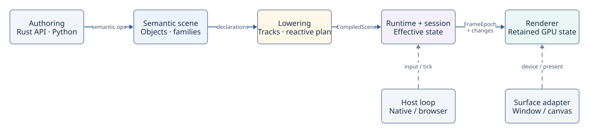

Architecture
Noon has one semantic model with distinct authoring frontends and platform hosts. The normative architecture document is the source of truth; this page is an overview.
Architecture in one picture

The engine path is:
Rust/Python authoring → Semantic Scene → Execution Plan → Runtime → RendererThe semantic scene retains authored object identity and relationships. Lowering creates execution projections; the runtime evaluates the published state, and the renderer retains resources needed to present that state.
Native Rust
Native Rust uses typed in-process boundaries with no Python or serialization between the scene, runtime, and renderer. noon-native provides windowing, surfaces, input, and presentation.
Browser and Python
Direct Rust/WASM uses the same typed engine in a WASM context. Python in Pyodide runs in a separate authoring context; real cross-context data transfer is used when handing derived work to the renderer. The browser supplies canvas, input and scheduling services without becoming a second semantic engine.
Execution and rendering
Runtime publication follows scene changes. Renderer resources are retained where possible, so mostly static scenes need not recompute every object for each frame. Actual performance remains workload- and platform-dependent.